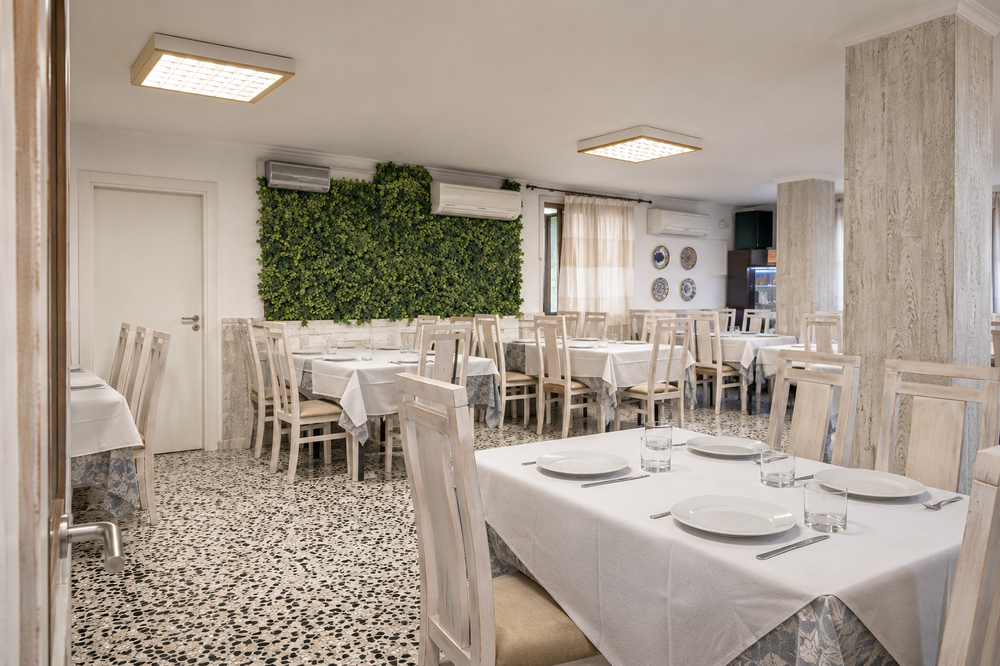

EL SUR. LA MESA. EL MOMENTO.HOYO 19 · EL LUGAR
Qué bien
se está aquí.
La mesa
ya está
puesta.
Ven por la comida.
Quédate por el momento.
04 — CELEBRAR ES SENTARSE JUNTOS
Hay días
que merecen
otra sobremesa.
Comidas de grupo, encuentros familiares, eventos privados y catering. Cuéntanos qué tienes en mente y consulta las posibilidades del restaurante.
Hablemos de tu celebración ↗MEJOR.
Salón privado
Catering
Reservas para grupos
LOS DETALLES TAMBIÉN CUENTAN
Ven como eres.
A tu aire
Terraza · salón climatizado · chimenea · zona de fumadores · wifi gratuito.
Con los tuyos
Familias y grupos · menú infantil · tronas · mascotas admitidas dentro y fuera.
Todo más fácil
Aparcamiento gratuito · entrada, aparcamiento y aseo accesibles · comida para llevar.
Un plan completo
Desayunos, brunch, comidas y cenas · bar, vinos, cervezas y cócteles · música en directo, consulta programación.
Ver todos los servicios y formas de pago
Servicio en mesa y barra, salón privado, catering y eventos privados. Opciones saludables, ensaladas, platos para compartir y postres. Se aceptan reservas. Google Maps indica que no hay reparto a domicilio. La web anuncia accesibilidad; Maps señala entrada, aparcamiento y aseo accesibles, pero no asientos adaptados: consulta tus necesidades al reservar.
Pagos anunciados en la web: efectivo, American Express, Mastercard, Visa, débito, Diners Club, Maestro y pago sin contacto. Google Maps confirma débito y NFC.
05 — ALREDEDOR DE NUESTRAS MESAS
La experiencia,
en primera persona.
Entre las reseñas consultadas se valoran el ambiente acogedor, los desayunos y el trato. También aparecen críticas sobre esperas y experiencias irregulares de cocina y servicio.
Síntesis de una muestra de reseñas, no de la totalidad. Puedes consultar las opiniones completas y más recientes en Google Maps.
NOS VEMOS EN HOYO 19
Te guardamos
un buen momento.
+34 622 79 72 07 ↗Reserva por teléfono. La mesa queda confirmada
cuando el restaurante te lo indique.
HORARIO PUBLICADO EN GOOGLE
- Lunes y martes
- 07:30 — 23:00
- Miércoles y jueves
- Cerrado
- Viernes
- 07:30 — 00:00
- Sábado
- 08:00 — 00:00
- Domingo
- 08:00 — 23:00
Consulta posibles cambios en festivos.